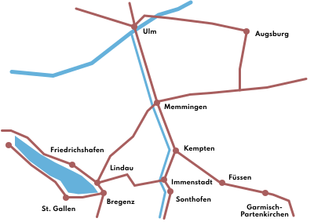
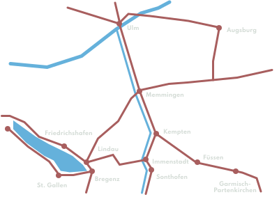

Hi, I’m Julian Klotz. I help clients design and ship
successful digital products that people will love to
use. My solutions are designed around users’ needs &
desires and drive business goals.
Every product comes with a team, no matter how
small. I help people in product management, design
and development to grow a human-centered mindset,
enabling teams to build software that is aligned
with peoples’ behavior.
Technology-driven companies often struggle to adapt a
mindset that puts people and accessible experiences first,
negatively affecting customer satisfaction and business
performance.
Design Phases
Services
Here’s an overview of how I can support product
teams. The phases and methods depend on the scope
and the characteristics of the projects.
Phase №1
Ideation & Discovery
customer interviews — Building structured knowledge
about the customers’ needs and desires, driven
by frequent interviews.
Desk research — Reviewing
literature, existing research and identifying
competitors.
Benchmarking — Profiling
similar products with respect to their strengths
and weaknesses.
Creating experience maps — Experience maps reflect the
users high-level journey with a product,
including moments of success and pain points.
Creating opportunity solution trees — Mapping out opportunities and
solutions in a tree-structure that supports
making informed, contrasting decisions.
Phase №2 Concept
Context analysis — Understanding in which contexts
the product will be used “in the field”.
Product language — define
What the product should feel like and how it aligns
with the brand.
Requirements analysis — Defining features and their
interactions
Lo-fidelity prototyping — Try
out ideas related to your concept in very simple
ways, like using paper prototypes and letting people
explain sketched schematics
Phase №3 Production
Designing a Design System — A
design system captures all the details of the user
interface, from the smallest elements (colors, font
sizes etc.) to complex layouts.
User Flows — Define the
different paths that users can take through the
jungle of user interface elements, views, modals and
overlays.
UI Design — Arguably, this is
the step that most people refer to when talking
about design. Moving pixels, walking through
sequences of views and polishing drop shadows.
High-fidelity prototyping and testing — At this point, the product is
close to technical implementation. Using tools like
Figma or Sketch, interactive prototypes can be
created with ease. Testing the prototypes upfront
with real users will help to keep the number of
iterations low and developers happy.
Phase №4 Implementation
& Launch
Refining — During technical
implementation, details questions will pop up,
resulting in adjustments to the concept and design.
Setting up tracking — It’s
time to set up tracking and to gather key numbers
right from the start.
User testing — Depending on
how much testing has been done so for, the product
can be tested “in the wild” now while being in alpha
or beta version, giving you insights about the final
product.
Let’s talk! — During
technical implementation, marketing, customer
support, sales and other stakeholders should be
informed about the upcoming launch or update.
Location
I’m based in Immenstadt im Allgäu, south-eastern
Germany, between Lake Constance and Munich. I work
remote and on-location, because I value both
face-to-face communiation and phases of concentrated
work at the desk. Locations include:
Augsburg ·
Bregenz (AT) ·
Füssen ·
Kempten ·
Lindau ·
Marktoberdorf ·
Munich ·
St.Gallen (CH) ·
Ulm


Background
I graduated in Interactive Media Design (M.A.) at the
University of Applied Sciences, Darmstadt in 2013. Since
then, I’ve been working in design and development roles
fulltime. Previous design projects include:
Introducing subscription-based business models
Creating cross-platform design systems
Designing content management systems for travel
destinations
Designing user interfaces for AI-based medical
technologies
Iterating and improving on an existing B2C sales
platform
Designing a sharing and communication app for
performing arts
Research and design prototyping for a hiking and
cycling app (map, route planner, location search, …)
Contact
If you’d like to say “hi,” here’s the place to do
it.